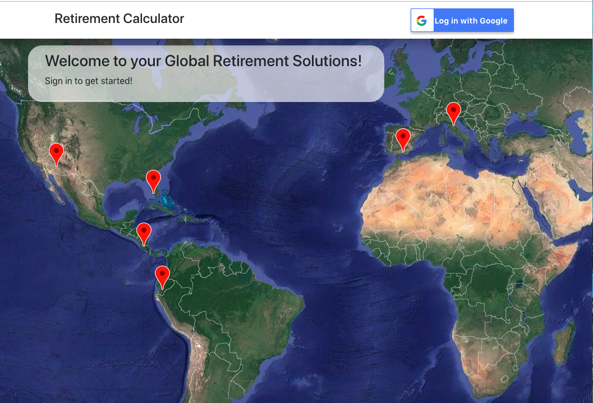

Jocelyn Shelton
Retirement Calculator, React versionThis project consists of creative retirement solutions and uses API requests along with React and Mongo database. The user signs in and inputs specific details into the input fields, then clicks "submit". Then the Numbeo API pulls information pertaining to 10 specific cities and JQuery/Javascript code computes retirement results based on data points of Social Security/Pension, 401k/IRA retirement assets, and desired retirement Age compared to a life expectancy estimate of 80. The results indicates to the user the total amount of funds currently needed to retire in a specific location. The information is also saved to the Mongo database. |
 |
Train SchedulerThis application incorporates Firebase to host arrival and departure data. It retrieves and manipulates this information with Moment.js. This website provides up-to-date information about various trains, including arrival times and how many minutes remain until they arrive at their station. In addition, users from many different machines are able to view same train times. Administrators can add trains with the following details:Train Name, Train Destination, First Train Time (in military time), Train Frequency (in minutes). Javascript, jQuery, HTML5, CSS3, Firebase, Moment.js |
 |
Pie Space!Pie Space is a full stack app built using the MVC paradigm and Edamam API that allows a user to create an account, and search for recipes by typing the name of the receipe into the receipe search bar. The app also displays ingredients of each receipe that is clicked on. Additionally, users can input their own receipes by adding ingredients and saving this to a shopping list. It utilizes Node and Express Web Server, and is backed by MySQL Database and an ORM. This app also uses both GET and POST routes for retrieving and adding new data, and is deployed using Heroku (with Data). |
|
Crystal Collector GameThe computer picks a random number at the start of the game between 19-120. There are four crystals displayed, and each one is randomly assigned a value between 1 and 12, which varies for each game. The player can click on any of the four crystals an unlimited number of times, to add points to the player's total score. The player wins if their total score exactly matches the random number from the beginning of the game. The player loses if their score goes above the random number. The app uses HTML, CSS, and J-Query. |
 |
BooksSearchThis assignment requires React components, works with helper functions, and utilize the React mounting lifecycle to query and display articles based on user searches. Also Node, Express and MongoDB are used so that users can save articles to read later. |
 |
Friend FinderFriend finder is similar to a dating app. This full-stack site will take in results from your users' survey of 10 questions, then compare their answers with those from other users. The user responds to each question with a ranking of 1-5, from strongly disagree to strong agree. Then the app calculates the best match based on the absolute difference for all combined questions, and displays the name and picture of the user with the best overall match. It uses Express.js, node.js, HTML, CSS, Bootstrap, Javascript, and jQuery. |
 |
Eat-Da-BurgerA restaurant app that lets users input the names of burgers they'd like to eat. Whenever a user submits a burger's name, the app will display the burger on the left side of the page -- waiting to be devoured. Each burger in the waiting area also has a Devour it! button. When the user clicks it, the burger will move to the right side of the page. The app will store every burger in a database, whether devoured or not. The app uses MySQL, Node, Express, Handlebars and ORM. It is deployed through Heroku. |
 |
Clicky GameThis is a memory game built using React [Create React App]. The goal is to click all 12 cards only one time. If a card is clicked more than once, then the player loses and the score is reset to 0. The app keeps track of the user's score. Every time an image is clicked, the images rendered to the page shuffle themselves in a random order. Once the user's score is reset after an incorrect guess, the game restarts. This app uses React, ES6, Bootstrap, CSS |
 |